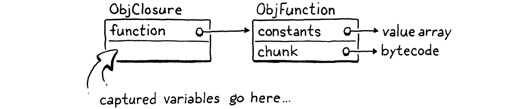
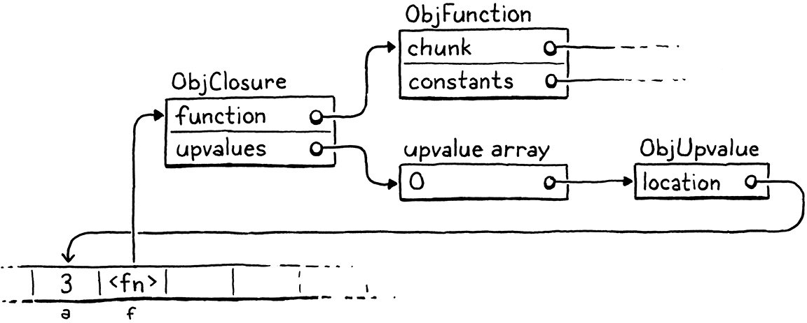
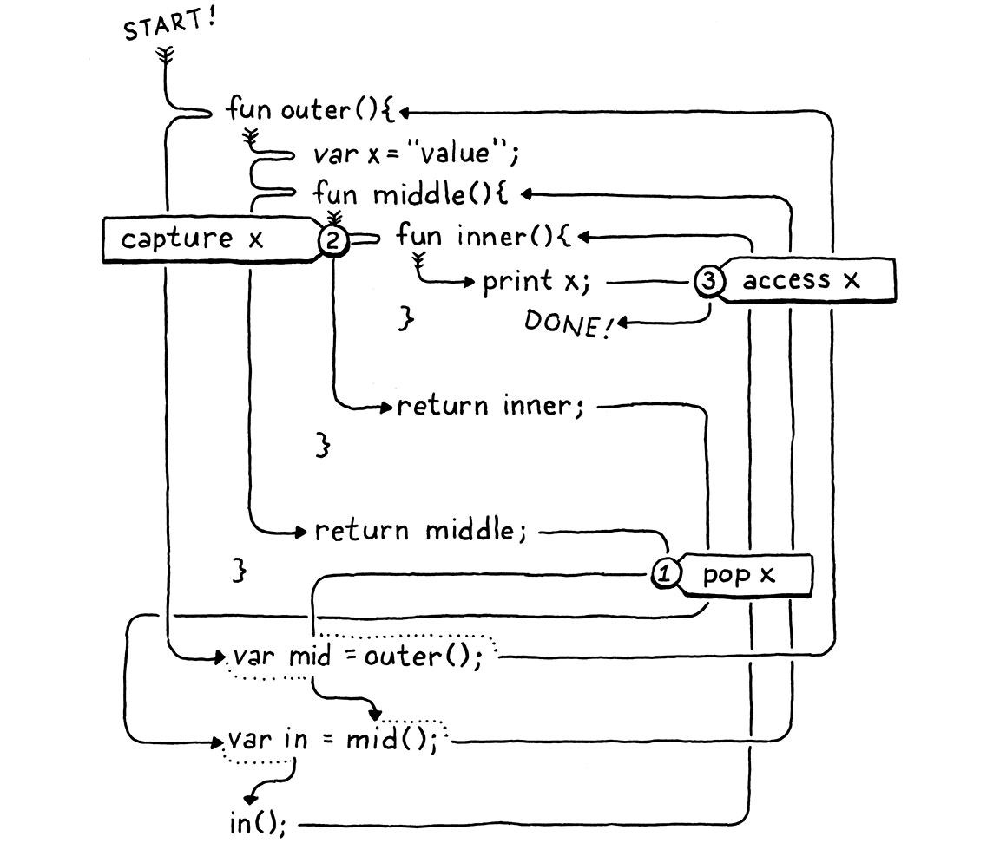
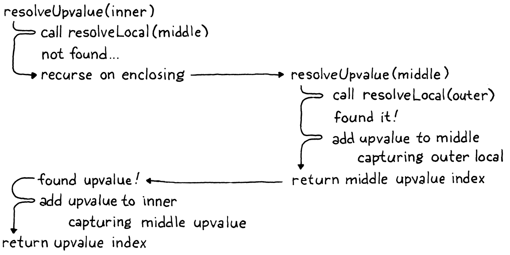
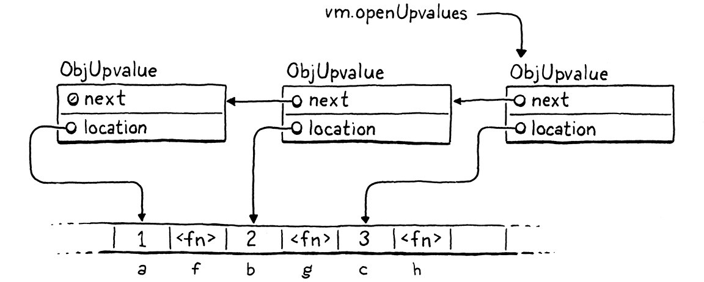
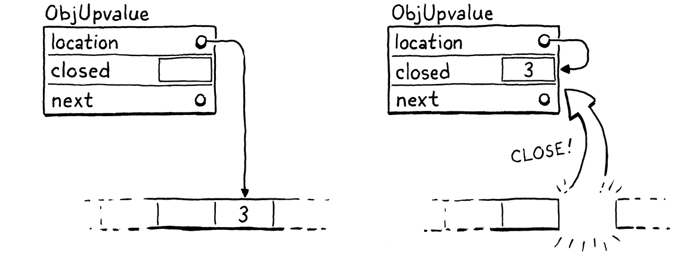

闭包
正如那位先生所说，每个复杂问题都有一个简单的解法，而它是错的。
翁贝托·埃科，《傅科钟》
多亏了我们在上一章里的辛勤劳动，我们已经有了一台能跑函数的虚拟机。它缺的是闭包。除了全局变量（那又是另一码事）之外，函数没有任何办法引用在自身函数体之外声明的变量。
var x = "global"; fun outer() { var x = "outer"; fun inner() { print x; } inner(); } outer();
现在跑这个例子，它打印的是 “global”。它本该打印 “outer”。要修好这个，我们需要在解析一个变量时，把周围所有函数的整个词法作用域都算进去。
这个问题在 clox 里比在 jlox 里更难，因为我们的字节码 VM 把局部变量存在栈上。我们用栈，是因为我声称局部变量具有栈语义——变量按创建的逆序被丢弃。但有了闭包，这话就大体上才是对的。
fun makeClosure() { var local = "local"; fun closure() { print local; } return closure; } var closure = makeClosure(); closure();
外层函数 makeClosure() 声明了一个变量 local。它还创建了一个内部函数 closure()，捕获了那个变量。然后 makeClosure() 返回对那个函数的一个引用。既然这个闭包带着局部变量一起逃逸了，local 就必须比创建它的那次函数调用活得更久。
我们可以用另一种办法来解决这个问题：为所有局部变量动态分配内存。jlox 就是这么做的，它把所有东西塞进那些飘在 Java 堆里的 Environment 对象中。但我们不想这么做。用栈真的很快。大多数局部变量不会被闭包捕获，而且确实具有栈语义。为了少数被捕获的局部变量，把所有局部变量都变慢，那也太亏了。
这意味着要用一套比 Java 解释器里更复杂的做法。因为有些局部变量的生命周期差别很大，我们会有两套实现策略。对那些不会被闭包用到的局部变量，我们照旧把它们留在栈上。当一个局部变量被闭包捕获时，我们改用另一个方案，把它们提升到堆上，让它们在那里想活多久都行。
闭包早在 Lisp 时代就有了，那时内存里的每个字节和 CPU 周期都比绿宝石还珍贵。此后几十年里，黑客们想出了各式各样的方法，把闭包编译成优化过的运行时表示。有些效率更高，但需要比我们能轻轻松松塞进 clox 的更复杂的编译过程。
我在这里讲的技术来自 Lua VM 的设计。它快、对内存省，而且用相对少的代码就实现了。更令人印象深刻的是，它能自然地塞进 clox 和 Lua 都在用的单遍编译器里。不过它有点绕。可能要过一阵子，你脑子里的那些零件才能全部对上。我们一步一步地搭，我会尽量分阶段介绍这些概念。
25 . 1闭包对象
我们的 VM 在运行时用 ObjFunction 表示函数。这些对象由前端在编译期创建。运行时，VM 所做的只是从常量表里把这个函数对象加载出来、绑定到一个名字上。没有任何操作能在运行时「创建」一个函数。就像字符串和数字字面量一样，它们是纯粹在编译期实例化的常量。
这样说得通，因为组成一个函数的所有数据在编译期就已知道：从函数体编译出的字节码块，以及函数体里用到的常量。但一旦我们引入闭包，这种表示就不再够了。看看这个：
fun makeClosure(value) { fun closure() { print value; } return closure; } var doughnut = makeClosure("doughnut"); var bagel = makeClosure("bagel"); doughnut(); bagel();
makeClosure() 函数定义并返回一个函数。我们调用它两次，拿回两个闭包。它们由同一条嵌套函数声明 closure 创建，但捕获的是不同的值。当我们调用这两个闭包时，每个打印一个不同的字符串。这意味着我们需要一个运行时的闭包表示，用来捕获函数声明执行时（而不只是编译时）周围那些局部变量。
我们会一步步做到捕获变量，但一个好的第一步是定义那个对象表示。我们现有的 ObjFunction 类型表示函数声明原始（raw）的编译期状态，因为由单条声明创建的所有闭包都共享同样的代码和常量。运行时，当我们执行一条函数声明时，我们把这个 ObjFunction 包进一个新的 ObjClosure 结构。后者持有一个指向底层裸函数的引用，外加该函数所捕获变量的运行时状态。

我们会把每个函数都包进一个 ObjClosure，哪怕这个函数其实并没有闭包捕获周围的任何局部变量。这有点浪费，但它简化了 VM，因为我们可以永远假定所调用的函数是个 ObjClosure。这个新结构体一开始是这样的：
加在结构体 ObjString 之后
typedef struct { Obj obj; ObjFunction* function; } ObjClosure;
目前它只是指向一个 ObjFunction，再加上必要的对象头部字段。照例走完给 clox 添加新对象类型的那套仪式，我们声明一个 C 函数来创建新闭包。
} ObjClosure;
加在结构体 ObjClosure 之后
ObjClosure* newClosure(ObjFunction* function);
ObjFunction* newFunction();
然后在这里实现它：
加在 allocateObject() 之后
ObjClosure* newClosure(ObjFunction* function) { ObjClosure* closure = ALLOCATE_OBJ(ObjClosure, OBJ_CLOSURE); closure->function = function; return closure; }
它接收一个指向它所包装的那个 ObjFunction 的指针。它还把 type 字段初始化为一个新类型。
typedef enum {
在枚举 ObjType 内
OBJ_CLOSURE,
OBJ_FUNCTION,
而当我们用一个闭包用完时，我们释放它的内存。
switch (object->type) {
在 freeObject() 内
case OBJ_CLOSURE: { FREE(ObjClosure, object); break; }
case OBJ_FUNCTION: {
我们只释放 ObjClosure 本身，不释放 ObjFunction。那是因为闭包并不拥有那个函数。可能有多个闭包都引用同一个函数，而它们谁也不对它有特殊权利。在所有引用它的对象都消失之前——甚至包括那个常量表里装着它的外围函数——我们都不能释放 ObjFunction。追踪这件事听起来很麻烦，而且确实如此！这就是我们很快要写一个垃圾回收器来替我们管它的原因。
我们还有那套检查一个值类型的常规宏。
#define OBJ_TYPE(value) (AS_OBJ(value)->type)
#define IS_CLOSURE(value) isObjType(value, OBJ_CLOSURE)
#define IS_FUNCTION(value) isObjType(value, OBJ_FUNCTION)
以及用来转型一个值的：
#define IS_STRING(value) isObjType(value, OBJ_STRING)
#define AS_CLOSURE(value) ((ObjClosure*)AS_OBJ(value))
#define AS_FUNCTION(value) ((ObjFunction*)AS_OBJ(value))
闭包是一等对象，所以你可以打印它们。
switch (OBJ_TYPE(value)) {
在 printObject() 内
case OBJ_CLOSURE: printFunction(AS_CLOSURE(value)->function); break;
case OBJ_FUNCTION:
它们显示得和 ObjFunction 完全一样。从用户的角度看，ObjFunction 和 ObjClosure 的区别纯粹是一个隐藏的实现细节。这件事先放一边，我们已经有了一个能用的、但是空的闭包表示。
25 . 1 . 1编译成闭包对象
我们有闭包对象了，但我们的 VM 从不创建它们。下一步是让编译器发射指令，告诉运行时什么时候创建一个新的 ObjClosure 来包装某个 ObjFunction。这发生在一条函数声明的末尾。
ObjFunction* function = endCompiler();
在 function() 内
替换 1 行
emitBytes(OP_CLOSURE, makeConstant(OBJ_VAL(function)));
}
以前，一条函数声明的最后一条字节码是单独一条 OP_CONSTANT 指令，用来从外围函数的常量表加载编译好的函数并把它压栈。现在我们有了一条新指令。
OP_CALL,
在枚举 OpCode 内
OP_CLOSURE,
OP_RETURN,
和 OP_CONSTANT 一样，它带一个操作数，表示该函数在常量表里的索引。但等我们讲到运行时的实现时，我们要做更有意思的事。
首先，让我们做认真的 VM 黑客，给这条指令加上反汇编器支持。
case OP_CALL:
return byteInstruction("OP_CALL", chunk, offset);
在 disassembleInstruction() 内
case OP_CLOSURE: { offset++; uint8_t constant = chunk->code[offset++]; printf("%-16s %4d ", "OP_CLOSURE", constant); printValue(chunk->constants.values[constant]); printf("\n"); return offset; }
case OP_RETURN:
这里面发生的事比我们通常在反汇编器里见到的要多。到本章末尾，你会发现 OP_CLOSURE 是一条相当不寻常的指令。现在它很简单——只有一个字节的操作数——但我们还会往里加东西。这段代码提前为那一天做好了准备。
25 . 1 . 2解释函数声明
我们要做的大部分工作都在运行时。我们当然得处理这条新指令。但我们还得改掉 VM 里每一处处理 ObjFunction 的代码，让它们改用 ObjClosure——函数调用、调用帧，等等。不过我们先从这条指令开始。
}
在 run() 内
case OP_CLOSURE: { ObjFunction* function = AS_FUNCTION(READ_CONSTANT()); ObjClosure* closure = newClosure(function); push(OBJ_VAL(closure)); break; }
case OP_RETURN: {
和之前用的 OP_CONSTANT 指令一样，我们先从常量表里加载编译好的函数。区别在于，现在我们把这个函数包进一个新的 ObjClosure，并把结果压栈。
一旦你有了闭包，你最终会想调用它。
switch (OBJ_TYPE(callee)) {
在 callValue() 内
替换 2 行
case OBJ_CLOSURE: return call(AS_CLOSURE(callee), argCount);
case OBJ_NATIVE: {
我们删掉调用 OBJ_FUNCTION 类型对象的代码。既然我们把所有函数都包进了 ObjClosure，运行时再也不会试图去调用一个裸的 ObjFunction。那些对象只活在常量表里，在别的什么东西看到它们之前就被包成闭包了。
我们用一段非常相似的、改为调用闭包的代码替换掉旧代码。唯一的区别是传给 call() 的对象类型。真正的改动在那个函数里面。首先，我们更新它的签名。
在函数 call() 内
替换 1 行
static bool call(ObjClosure* closure, int argCount) {
if (argCount != function->arity) {
然后在函数体里，我们得修好所有引用了这个函数的地方，因为现在我们引入了一层间接。先从元数检查开始：
static bool call(ObjClosure* closure, int argCount) {
在 call() 内
替换 3 行
if (argCount != closure->function->arity) { runtimeError("Expected %d arguments but got %d.", closure->function->arity, argCount);
return false;
唯一的变化是我们把闭包拆开，拿到底下那个函数。call() 接下来做的事是创建一个新的 CallFrame。我们把那段代码改成把闭包存进 CallFrame，并从闭包的函数里取出字节码指针。
CallFrame* frame = &vm.frames[vm.frameCount++];
在 call() 内
替换 2 行
frame->closure = closure; frame->ip = closure->function->chunk.code;
frame->slots = vm.stackTop - argCount - 1;
这就要求同时改掉 CallFrame 的声明。
typedef struct {
在结构体 CallFrame 内
替换 1 行
ObjClosure* closure;
uint8_t* ip;
这个改动会引发一连串连锁变化。VM 里每一处访问 CallFrame 的函数的地方，都得改用闭包。先是那条从当前函数常量表读常量的宏：
(uint16_t)((frame->ip[-2] << 8) | frame->ip[-1]))
在 run() 内
替换 2 行
#define READ_CONSTANT() \ (frame->closure->function->chunk.constants.values[READ_BYTE()])
#define READ_STRING() AS_STRING(READ_CONSTANT())
当 DEBUG_TRACE_EXECUTION 打开时，它需要经由闭包拿到代码块。
printf("\n");
在 run() 内
替换 2 行
disassembleInstruction(&frame->closure->function->chunk, (int)(frame->ip - frame->closure->function->chunk.code));
#endif
报告运行时错误时也一样：
CallFrame* frame = &vm.frames[i];
在 runtimeError() 内
替换 1 行
ObjFunction* function = frame->closure->function;
size_t instruction = frame->ip - function->chunk.code - 1;
就快完成了。最后一块是那坨为 Lox 脚本的顶层代码做准备的代码，用来建立第一个 CallFrame。
push(OBJ_VAL(function));
在 interpret() 内
替换 1 行
ObjClosure* closure = newClosure(function); pop(); push(OBJ_VAL(closure)); call(closure, 0);
return run();
编译器在编译一个脚本时，仍然返回一个原始的 ObjFunction。这没问题，但这意味着我们得在这里、在 VM 能执行它之前，把它包进一个 ObjClosure。
我们又回到一个能工作的解释器了。用户分辨不出任何区别，但编译器现在会生成代码，告诉 VM 为每一条函数声明创建一个闭包。VM 每执行一条函数声明，就把 ObjFunction 包进一个新的 ObjClosure。VM 的其余部分现在处理的就是那些到处飘着的 ObjClosure 了。无趣的部分已经了结。现在我们准备好让这些闭包真的做点事情了。
25 . 2Upvalue
我们现有的读写局部变量的指令只限于单个函数的栈窗口。来自外围函数的局部变量在内部函数的窗口之外。我们需要一些新指令。
最简单的做法也许是加一条指令，它带一个相对的栈槽位偏移，能够到达当前函数窗口之前的地方。如果被闭包捕获的变量总在栈上，这招能行。但正如前面看到的，这些变量有时会比声明它们的函数活得更久。也就是说它们不总在栈上。
那么次简单的做法就是：任何被闭包捕获的局部变量，一律让它住在堆上。当外围函数里那条局部变量声明被执行时，VM 就为它动态分配内存。这样它就能想活多久活多久。
如果 clox 没有单遍编译器，这会是个不错的方案。但我们在实现里选定的这个限制把事情弄复杂了。看看这个例子：
fun outer() { var x = 1; // (1) x = 2; // (2) fun inner() { // (3) print x; } inner(); }
这里，编译器在 (1) 处编译 x 的声明，并在 (2) 处发射赋值的代码。它做这些的时候，还没走到 (3) 处的 inner() 声明、还没发现 x 确实被闭包捕获了。我们没有好办法回头去修改那些已经发射出去的代码，让它对 x 特殊处理。我们想要的是一个方案：让一个被捕获的变量先像普通局部变量一样住在栈上，直到它被闭包捕获的那一刻为止。
幸运的是，多亏了 Lua 开发团队，我们有了一个方案。我们用一层他们称作 upvalue（闭包变量）的间接。upvalue 指向外层函数里的一个局部变量。每个闭包都维护一个 upvalue 数组，闭包用到的每一个外围局部变量各占一个。
upvalue 反过来指向栈上那个被捕获变量所在的位置。当闭包需要访问一个被捕获的变量时，它经由对应的 upvalue 找到它。当一条函数声明第一次被执行、我们为它创建闭包时，VM 创建 upvalue 数组，并把它们接好线，去「捕获」闭包需要的那些外围局部变量。
比如说，我们把下面这个程序丢给 clox，
{
var a = 3;
fun f() {
print a;
}
}
编译器和运行时会合起伙来，在内存里搭出这样一组对象：

看起来也许让人望而生畏，但别怕。我们会一步步走过它。关键在于，upvalue 充当了那层间接，使得被捕获的局部变量即使已经离开栈，我们仍然能继续找到它。不过在讲这些之前，我们先专心把被捕获变量的编译讲完。
25 . 2 . 1编译 upvalue
照例，我们想在编译期尽量多干活，好让执行保持简单快速。由于局部变量在 Lox 里是词法作用域的，在编译期我们就已经掌握足够信息，能确定一个函数访问了哪些外围局部变量，以及那些局部变量声明在哪里。这又意味着我们知道一个闭包需要多少个 upvalue、它们捕获哪些变量，以及在声明函数的栈窗口里哪些栈槽位装着这些变量。
目前，当编译器解析一个标识符时，它从最内到最外遍历当前函数的各个块作用域。如果在这个函数里找不到那个变量，我们就假定它一定是全局的。我们不考虑外围函数的局部作用域——它们被直接跳过了。于是第一处改动，就是为那些外层局部作用域插入一个解析步骤。
if (arg != -1) {
getOp = OP_GET_LOCAL;
setOp = OP_SET_LOCAL;
在 namedVariable() 内
} else if ((arg = resolveUpvalue(current, &name)) != -1) { getOp = OP_GET_UPVALUE; setOp = OP_SET_UPVALUE;
} else {
这个新的 resolveUpvalue() 函数去找任何一层外围函数里声明的局部变量。如果找到了，它返回那个变量的一个「upvalue 索引」。（这是什么意思，我们后面再说。）否则它返回 -1，表示没有找到这个变量。如果找到了，我们用这两条新指令通过它的 upvalue 读写该变量：
OP_SET_GLOBAL,
在枚举 OpCode 内
OP_GET_UPVALUE, OP_SET_UPVALUE,
OP_EQUAL,
我们是以某种自顶向下的方式在实现，所以我很快就会给你看它们在运行时是怎么工作的。现在要盯住的部分，是编译器究竟怎么解析那个标识符。
加在 resolveLocal() 之后
static int resolveUpvalue(Compiler* compiler, Token* name) { if (compiler->enclosing == NULL) return -1; int local = resolveLocal(compiler->enclosing, name); if (local != -1) { return addUpvalue(compiler, (uint8_t)local, true); } return -1; }
我们在当前函数的作用域里解析局部变量失败之后才调用它，所以那时我们已经知道这个变量不在当前编译器里。回想一下，Compiler 存着一个指向外围函数那个 Compiler 的指针，这些指针构成一条链，一直通到顶层代码的根 Compiler。因此，如果外围 Compiler 是 NULL，我们就知道已经走到了最外层的函数而仍然没有找到局部变量。那个变量一定是全局的，于是我们返回 -1。
否则，我们试着把那个标识符当作外围编译器里的一个局部变量来解析。换句话说，我们在当前函数的紧外面找它。比如：
fun outer() { var x = 1; fun inner() { print x; // (1) } inner(); }
在编译 (1) 处那个标识符表达式时，resolveUpvalue() 去找在 outer() 里声明的局部变量 x。如果找到了——在这个例子里就是找到了——那我们就成功解析了这个变量。我们创建一个 upvalue，好让内部函数可以通过它访问该变量。upvalue 是在这里创建的：
加在 resolveLocal() 之后
static int addUpvalue(Compiler* compiler, uint8_t index, bool isLocal) { int upvalueCount = compiler->function->upvalueCount; compiler->upvalues[upvalueCount].isLocal = isLocal; compiler->upvalues[upvalueCount].index = index; return compiler->function->upvalueCount++; }
编译器维护一个 upvalue 结构体数组，用来跟踪它在每个函数体里解析出的那些被捕获的标识符。还记得编译器的 Local 数组是怎么镜像运行时局部变量所在的栈槽位索引的吗？新的 upvalue 数组用的是同样的办法。编译器数组里的索引，与运行时 upvalue 在 ObjClosure 里将处的索引一一对应。
这个函数往数组里加一个新的 upvalue。它还记录该函数用了多少个 upvalue。它把这个计数直接存进 ObjFunction 本身，因为我们在运行时也需要这个数字。
index 字段跟踪被捕获局部变量的槽位索引。这样编译器就知道外围函数里哪一个变量需要被捕获。那个 isLocal 字段配不配单独一节，我们很快就会讲到。最后，addUpvalue() 返回新建 upvalue 在该函数 upvalue 列表里的索引。这个索引就成了 OP_GET_UPVALUE 和 OP_SET_UPVALUE 指令的操作数。
这就是解析 upvalue 的基本思路，但这个函数还没完工。一个闭包可能会多次引用外围函数里的同一个变量。那种情况下，我们不想为每个标识符表达式都浪费时间和内存去创建一个独立的 upvalue。要解决这个，在添加新 upvalue 之前，我们先检查该函数是不是已经有一个 upvalue 捕获了那个变量。
int upvalueCount = compiler->function->upvalueCount;
在 addUpvalue() 内
for (int i = 0; i < upvalueCount; i++) { Upvalue* upvalue = &compiler->upvalues[i]; if (upvalue->index == index && upvalue->isLocal == isLocal) { return i; } }
compiler->upvalues[upvalueCount].isLocal = isLocal;
如果我们在数组里找到一个槽位索引与我们正要添加的相匹配的 upvalue，就直接返回那个 upvalue 索引并复用它。否则就往下走，添加那个新的 upvalue。
这两个函数访问并修改了一批新状态，所以我们来把它们定义出来。首先，给 ObjFunction 加上 upvalue 计数。
int arity;
在结构体 ObjFunction 内
int upvalueCount;
Chunk chunk;
我们是尽职的 C 程序员，所以在 ObjFunction 第一次被分配时把那个值零初始化。
function->arity = 0;
在 newFunction() 内
function->upvalueCount = 0;
function->name = NULL;
在编译器里，我们为 upvalue 数组加一个字段。
int localCount;
在结构体 Compiler 内
Upvalue upvalues[UINT8_COUNT];
int scopeDepth;
为了简单，我给了它一个固定大小。OP_GET_UPVALUE 和 OP_SET_UPVALUE 指令用一个字节的操作数编码 upvalue 索引，所以一个函数能有多少 upvalue 是有限制的——它能捕获多少个不重复的变量。既然如此，我们用一个那么大的静态数组是负担得起的。我们还得确保编译器不会超出这个上限。
if (upvalue->index == index && upvalue->isLocal == isLocal) {
return i;
}
}
在 addUpvalue() 内
if (upvalueCount == UINT8_COUNT) { error("Too many closure variables in function."); return 0; }
compiler->upvalues[upvalueCount].isLocal = isLocal;
最后是 Upvalue 结构体类型本身。
加在结构体 Local 之后
typedef struct { uint8_t index; bool isLocal; } Upvalue;
index 字段存着这个 upvalue 正在捕获哪个局部槽位。isLocal 字段值得单独一节，我们下一节就讲。
25 . 2 . 2把 upvalue 拉平
在我前面举的例子里，闭包访问的是紧邻外围函数里声明的变量。Lox 还支持访问在任何外层作用域里声明的局部变量，就像这样：
fun outer() { var x = 1; fun middle() { fun inner() { print x; } } }
这里我们在 inner() 里访问 x。那个变量不是定义在 middle() 里，而是一直定义在最外面的 outer() 里。这类情况我们也得处理。你可能觉得这并不难多少，因为那个变量无非是在栈上更靠下的某个地方。但看看这个刁钻的例子：
fun outer() { var x = "value"; fun middle() { fun inner() { print x; } print "create inner closure"; return inner; } print "return from outer"; return middle; } var mid = outer(); var in = mid(); in();
你运行它时，它应该打印出：
return from outer create inner closure value
我知道，这很绕。关键在于，outer()——x 被声明的地方——在 inner() 的声明执行之前，就已经返回并把它所有的变量都从栈上弹掉了。所以，当我们为 inner() 创建闭包的那个时刻，x 已经不在栈上了。
这里我替你把执行流程画了出来：

看见 x 是怎么先被弹出 ①，然后才被捕获 ②，之后才被访问 ③ 的吗？我们真的有两个问题：
-
我们需要能解析那些声明在紧邻外围函数之外、更外面那些函数里的局部变量。
-
我们需要能捕获那些已经离开栈的变量。
幸运的是，我们正在给 VM 加 upvalue，而 upvalue 本来就是明确为跟踪逃出栈的变量而设计的。所以，用一点巧妙的自指，我们可以用 upvalue 来让 upvalue 捕获声明在紧邻外围函数之外的变量。
解决方案是：允许一个闭包捕获紧邻外围函数里的局部变量，或者一个已经存在的 upvalue。如果一个深嵌套的函数引用了几层之外的局部变量，我们就让它穿过所有中间函数层层传递——每一层函数都捕获一个 upvalue，好让下一层函数来抓。
在上面的例子里，middle() 捕获了紧邻外围函数 outer() 里的局部变量 x，并把它存进自己的 upvalue 里。尽管 middle() 自己根本没有引用 x，它也这么做。然后，当 inner() 的声明执行时，它的闭包从 middle() 那个 ObjClosure 里抓取那个 x 的 upvalue。一个函数（无论捕获的是局部变量还是 upvalue）只从紧邻的外围函数捕获，而紧邻的外围函数在内层函数声明执行的那一刻一定还活着。
为了实现这个，resolveUpvalue() 变成递归的。
if (local != -1) {
return addUpvalue(compiler, (uint8_t)local, true);
}
在 resolveUpvalue() 内
int upvalue = resolveUpvalue(compiler->enclosing, name); if (upvalue != -1) { return addUpvalue(compiler, (uint8_t)upvalue, false); }
return -1;
它不过又多了三行代码，但我发现第一次要把这个函数写对真的很难。尤其考虑到我并没有发明任何新东西，只是把概念从 Lua 移植过来。大多数递归函数要么在递归调用之前就把活干完（前序遍历，或者「往下走」时干），要么在递归调用之后才把活干完（后序遍历，或者「往回走」时干）。这个函数两样都做。那次递归调用就夹在正中间。
我们慢慢走一遍。首先，我们在外围函数里找一个匹配的局部变量。如果找到了，我们捕获那个局部变量并返回。这就是基本情形。
否则，我们去找紧邻外围函数之外的局部变量。做法是对外围那个编译器递归调用 resolveUpvalue()，而不是对当前编译器。这一串 resolveUpvalue() 调用沿着嵌套编译器的链条一路走下去，直到碰上某个基本情形——要么找到一个真正可以捕获的局部变量，要么把编译器都用完了。
找到一个局部变量时，嵌套最深的那次 resolveUpvalue() 调用捕获它并返回 upvalue 索引。这又返回给处理内层函数声明的下一次调用。那次调用捕获外围函数的upvalue，如此往复。随着每一次对 resolveUpvalue() 的嵌套调用返回，我们就一路钻回到那个标识符出现的、最内层的函数声明里。沿途每一步，我们都给中间那个函数添加一个 upvalue，并把得到的 upvalue 索引传给下一次调用。
解析 x 时，把原来那个例子走一遍也许有帮助：

注意 addUpvalue() 那次新调用为 isLocal 参数传的是 false。现在你看到了，那个标志控制的是闭包捕获一个局部变量，还是捕获外围函数的一个 upvalue。
等到编译器走到一条函数声明的末尾，每一个变量引用都已经被解析成局部变量、upvalue 或全局变量。每一个 upvalue 又可能捕获外围函数的一个局部变量，或者在传递性闭包的情形下捕获另一个 upvalue。我们终于有了足够的数据，可以发射字节码，让它在运行时创建一个闭包，捕获所有正确的变量。
emitBytes(OP_CLOSURE, makeConstant(OBJ_VAL(function)));
在 function() 内
for (int i = 0; i < function->upvalueCount; i++) { emitByte(compiler.upvalues[i].isLocal ? 1 : 0); emitByte(compiler.upvalues[i].index); }
}
OP_CLOSURE 指令的独特之处在于它的编码长度是可变的。闭包每捕获一个 upvalue，就有两个单字节操作数。每一对操作数说明那个 upvalue 捕获什么。如果第一个字节是 1，它捕获外围函数里的一个局部变量；如果是 0，它捕获该函数的某个 upvalue。下一个字节是要捕获的局部槽位或 upvalue 索引。
这种古怪的编码意味着我们得为 OP_CLOSURE 在反汇编代码里写一些专门的支持。
printf("\n");
在 disassembleInstruction() 内
ObjFunction* function = AS_FUNCTION(
chunk->constants.values[constant]);
for (int j = 0; j < function->upvalueCount; j++) {
int isLocal = chunk->code[offset++];
int index = chunk->code[offset++];
printf("%04d | %s %d\n",
offset - 2, isLocal ? "local" : "upvalue", index);
}
return offset;
比如说，拿这个脚本来说：
fun outer() { var a = 1; var b = 2; fun middle() { var c = 3; var d = 4; fun inner() { print a + c + b + d; } } }
如果我们反汇编那条为 inner() 创建闭包的指令，它会打印出：
0004 9 OP_CLOSURE 2 <fn inner> 0006 | upvalue 0 0008 | local 1 0010 | upvalue 1 0012 | local 2
我们还有另外两条更简单的指令要加反汇编支持。
case OP_SET_GLOBAL:
return constantInstruction("OP_SET_GLOBAL", chunk, offset);
在 disassembleInstruction() 内
case OP_GET_UPVALUE: return byteInstruction("OP_GET_UPVALUE", chunk, offset); case OP_SET_UPVALUE: return byteInstruction("OP_SET_UPVALUE", chunk, offset);
case OP_EQUAL:
这两条都只有一个字节的操作数，所以没什么好激动人心的。我们确实得加一个 include，好让 debug 模块能拿到 AS_FUNCTION()。
#include "debug.h"
#include "object.h"
#include "value.h"
这样一来，我们的编译器就到位了。对每一条函数声明，它输出一条 OP_CLOSURE 指令，后面跟着一串操作数字节对，对应它在运行时需要捕获的每一个 upvalue。是时候跳到 VM 的那一侧，让东西跑起来了。
25 . 3Upvalue 对象
现在每一条 OP_CLOSURE 指令后面，都跟着那一串字节，说明这个 ObjClosure 该拥有哪些 upvalue。在处理这些操作数之前，我们需要一个 upvalue 的运行时表示。
加在结构体 ObjString 之后
typedef struct ObjUpvalue { Obj obj; Value* location; } ObjUpvalue;
我们知道 upvalue 必须管理那些不再住在栈上的被捕获变量，这意味着需要一定量的动态分配。在我们的 VM 里最简单的做法，是建立在已有的对象系统之上。这样一来，等我们在下一章实现垃圾回收器时，GC 也能一并管理 upvalue 的内存。
所以我们的运行时 upvalue 结构是一个带标准 Obj 头字段的 ObjUpvalue。紧跟着的是一个 location 字段，指向被捕获的那个变量。注意这是指向一个 Value 的指针，而不是 Value 本身。它是对一个变量的引用，而不是对一个值的引用。这一点很重要，因为它意味着当我们给 upvalue 所捕获的变量赋值时，我们赋给的是真正的变量，而不是一份拷贝。比如：
fun outer() { var x = "before"; fun inner() { x = "assigned"; } inner(); print x; } outer();
这个程序应该打印 “assigned”，尽管是闭包给 x 赋值、而外围函数读取它。
因为 upvalue 是对象，我们就有了全套常规对象机制，先从一个类似构造函数的函数开始：
ObjString* copyString(const char* chars, int length);
加在 copyString() 之后
ObjUpvalue* newUpvalue(Value* slot);
void printObject(Value value);
它接收被捕获变量所在槽位的地址。实现如下：
加在 copyString() 之后
ObjUpvalue* newUpvalue(Value* slot) { ObjUpvalue* upvalue = ALLOCATE_OBJ(ObjUpvalue, OBJ_UPVALUE); upvalue->location = slot; return upvalue; }
我们只是初始化对象并存储那个指针。这需要一个新对象类型。
OBJ_STRING,
在枚举 ObjType 内
OBJ_UPVALUE
} ObjType;
而在另一头，是一个类似析构函数的函数：
FREE(ObjString, object);
break;
}
在 freeObject() 内
case OBJ_UPVALUE: FREE(ObjUpvalue, object); break;
}
多个闭包可以捕获同一个变量，所以 ObjUpvalue 并不拥有它引用的那个变量。因此，要释放的只有 ObjUpvalue 本身。
最后，为了打印：
case OBJ_STRING:
printf("%s", AS_CSTRING(value));
break;
在 printObject() 内
case OBJ_UPVALUE: printf("upvalue"); break;
}
打印对终端用户没什么用。upvalue 之所以是对象，只是为了让我们能利用 VM 的内存管理。它们不是 Lox 用户能在程序里直接访问的一等值。所以这段代码其实永远不会被执行……不过它能阻止编译器抱怨我们有个没处理的 switch 分支，情况就是这样。
25 . 3 . 1闭包里的 upvalue
我第一次介绍 upvalue 时说过，每个闭包都有一个它们的数组。我们终于绕回到把这东西实现出来。
ObjFunction* function;
在结构体 ObjClosure 内
ObjUpvalue** upvalues; int upvalueCount;
} ObjClosure;
不同的闭包可能有不同数量的 upvalue，所以我们需要一个动态数组。upvalue 本身也是动态分配的，于是我们最后得到一个双指针——一个指向「动态分配的指针数组」的指针，而那个数组的元素又指向各个 upvalue。我们还把数组里的元素个数存下来。
当我们创建 ObjClosure 时，我们分配一个大小合适的 upvalue 数组，这个大小我们在编译期就确定了，并存进了 ObjFunction。
ObjClosure* newClosure(ObjFunction* function) {
在 newClosure() 内
ObjUpvalue** upvalues = ALLOCATE(ObjUpvalue*, function->upvalueCount); for (int i = 0; i < function->upvalueCount; i++) { upvalues[i] = NULL; }
ObjClosure* closure = ALLOCATE_OBJ(ObjClosure, OBJ_CLOSURE);
在创建闭包对象本身之前，我们分配 upvalue 数组并把它们全都初始化为 NULL。围着内存的这套奇怪仪式，是一场精心编排的舞，只为讨好（即将到来的）垃圾收集诸神。它确保内存管理器永远看不到未初始化的内存。
然后我们把数组存进新闭包，同时把计数从 ObjFunction 复制过来。
closure->function = function;
在 newClosure() 内
closure->upvalues = upvalues; closure->upvalueCount = function->upvalueCount;
return closure;
当我们释放一个 ObjClosure 时，我们也会释放它的 upvalue 数组。
case OBJ_CLOSURE: {
在 freeObject() 内
ObjClosure* closure = (ObjClosure*)object; FREE_ARRAY(ObjUpvalue*, closure->upvalues, closure->upvalueCount);
FREE(ObjClosure, object);
ObjClosure 并不拥有那些 ObjUpvalue 对象本身，但它确实拥有那个装着指向这些 upvalue 的指针的数组。
我们在解释器里创建闭包的时候填充这个 upvalue 数组。就是在这里，我们走过 OP_CLOSURE 后面的所有操作数，看每个槽位捕获的是哪一种 upvalue。
push(OBJ_VAL(closure));
在 run() 内
for (int i = 0; i < closure->upvalueCount; i++) { uint8_t isLocal = READ_BYTE(); uint8_t index = READ_BYTE(); if (isLocal) { closure->upvalues[i] = captureUpvalue(frame->slots + index); } else { closure->upvalues[i] = frame->closure->upvalues[index]; } }
break;
这段代码就是闭包活过来的魔法时刻。我们遍历闭包所期望的每一个 upvalue。对每一个，我们读一对操作数字节。如果这个 upvalue 捕获的是外围函数里的一个局部变量，我们就把活儿交给 captureUpvalue()。
否则，我们从外围函数捕获一个 upvalue。一条 OP_CLOSURE 指令是在函数声明的末尾发射的。在我们执行那条声明的那个时刻，当前函数就是外围的那个。这意味着当前函数的闭包存在调用栈顶部的那一个 CallFrame 里。所以，要从外围函数抓一个 upvalue，我们可以直接从那个缓存了 CallFrame 引用的局部变量 frame 里读出来。
捕获局部变量更有意思些。大部分工作都发生在一个单独的函数里，但首先我们算出要传给它的参数。我们需要拿到一个指针，指向被捕获的局部变量在外围函数栈窗口里的那个槽位。那个窗口起始于 frame->slots，它指向第 0 号槽位。加上 index 就把那个偏移量算到了我们想捕获的局部槽位上。我们把那个指针传到这里：
加在 callValue() 之后
static ObjUpvalue* captureUpvalue(Value* local) { ObjUpvalue* createdUpvalue = newUpvalue(local); return createdUpvalue; }
这看起来有点傻。它所做的全部事情，就是创建一个捕获给定栈槽位的新 ObjUpvalue 并返回它。我们需要为这个单开一个函数吗？嗯，不需要，目前还不用。但你知道我们最后肯定要在这里面塞更多代码。
首先，我们把手上这摊活收个尾。回到处理 OP_CLOSURE 的解释器代码里，我们最终会走完 upvalue 数组并初始化每一个。这完成之后，我们就得到了一个新闭包，带着一个装满了指向变量的 upvalue 的数组。
有了这个，我们就能实现那些操作这些 upvalue 的指令了。
}
在 run() 内
case OP_GET_UPVALUE: { uint8_t slot = READ_BYTE(); push(*frame->closure->upvalues[slot]->location); break; }
case OP_EQUAL: {
操作数是当前函数 upvalue 数组里的索引。所以我们只要查出对应的那个 upvalue，并解引用它的 location 指针，读出那个槽位里的值。给变量赋值也差不多。
}
在 run() 内
case OP_SET_UPVALUE: { uint8_t slot = READ_BYTE(); *frame->closure->upvalues[slot]->location = peek(0); break; }
case OP_EQUAL: {
我们取栈顶的值，把它存进所选 upvalue 指向的槽位。和局部变量那些指令一样，这些指令快很重要。用户程序不停地读写变量，所以它一慢，一切都慢。而一如既往，我们让它们变快的办法就是保持简单。这两条新指令相当不错：没有控制流，没有复杂算术，只有几层指针间接和一个 push()。
这是一个里程碑。只要所有变量都还留在栈上，我们就有可用的闭包了。试试这个：
fun outer() { var x = "outside"; fun inner() { print x; } inner(); } outer();
跑一下，它会正确地打印 “outside”。
25 . 4关闭的 upvalue
当然，闭包的一个关键特性是：只要需要，它就一直抓着那个变量不放，哪怕声明该变量的函数早就返回了。这里还有一个本该能工作的例子：
fun outer() { var x = "outside"; fun inner() { print x; } return inner; } var closure = outer(); closure();
但你现在就跑它……谁知道会怎样呢？运行时，它最后会从一个早已不再装着那个被捕获变量的栈槽位里读值。就像我已经说过好几次的，问题的核心在于：闭包里的变量不具有栈语义。这意味着当声明它们的函数返回时，我们得把它们从栈上搬走。本章最后这一节就干这件事。
25 . 4 . 1值与变量
在动手写代码之前，我想深挖一个重要的语义问题。闭包捕获的是值还是变量？这不纯粹是个学术问题。我不是在吹毛求疵。想想看：
var globalSet; var globalGet; fun main() { var a = "initial"; fun set() { a = "updated"; } fun get() { print a; } globalSet = set; globalGet = get; } main(); globalSet(); globalGet();
外层的 main() 函数创建两个闭包，把它们存进全局变量里，好让它们比 main() 本身的执行活得更久。这两个闭包捕获的是同一个变量。第一个闭包给它赋一个新值，第二个闭包读取这个变量。
那么 globalGet() 那次调用会打印什么？如果闭包捕获的是值，那么每个闭包都会拿到 a 的一份拷贝，取的是闭包那条函数声明执行时 a 的值。globalSet() 那次调用会修改 set() 手里那份 a，但 get() 的那份不受影响。所以 globalGet() 那次调用会打印 “initial”。
如果闭包捕获的是变量，那么 get() 和 set() 会捕获（引用）同一个可变变量。当 set() 改变 a 时，它改变的就是 get() 读取的那个 a。只有一个 a。这又意味着 globalGet() 那次调用会打印 “updated”。
是哪一种？对 Lox 以及我知道的其他大多数带闭包的语言来说，答案是后者。闭包捕获变量。你可以把它们理解为捕获了值所在的那个位置。这一点在我们处理那些已经不在栈上的被捕获变量时很重要。当一个变量搬到堆上时，我们要确保所有捕获它的闭包都持有对它那一个新位置的引用。这样，当变量发生改变时，所有闭包都能看到这个变化。
25 . 4 . 2关闭 upvalue
我们知道局部变量总是从栈上开始。这样更快，而且让我们的单遍编译器能在发现变量被捕获之前就发射代码。我们也知道，如果闭包活得比声明那个被捕获变量的函数更久，被捕获的变量就需要搬到堆上。
沿用 Lua 的叫法，我们把「仍指向栈上一个局部变量的 upvalue」称为 open upvalue。当一个变量搬到堆上时，我们就在关闭（closing）那个 upvalue，结果自然就是一个 closed upvalue。我们需要回答两个问题：
-
被捕获的变量搬到堆上的什么地方？
-
我们什么时候关闭那个 upvalue？
第一个问题很容易。我们已经有一个方便的、位于堆上的对象来表示对一个变量的引用——就是 ObjUpvalue 自己。被捕获的变量会搬进 ObjUpvalue 结构体内部的一个新字段。这样我们关闭一个 upvalue 时就不需要额外的堆分配。
第二个问题也很直白。只要变量还在栈上，就可能有代码在那里引用它，而那些代码必须正确工作。所以把这个变量提升到堆上的合理时机，是尽可能晚。如果我们就在局部变量离开作用域的那一刻把它搬走，我们就能确定此后不会有代码再试图从栈上访问它。之后变量出了作用域，编译器已经会在任何代码试图使用它时报告错误。
当一个局部变量离开作用域时，编译器本来就会发射一条 OP_POP 指令。如果某个变量被闭包捕获了，我们会改发射另一条指令，把那个变量从栈上搬进它对应的 upvalue 里。要做到这一点，编译器得知道哪些局部变量被闭包捕获了。
编译器已经为函数里的每个局部变量维护了一个 Upvalue 结构体数组，正好用来跟踪这件事。那个数组很适合回答「这个闭包用了哪些变量？」但它不适合回答「任何函数捕获了这个局部变量吗？」尤其是，某个闭包的 Compiler 结束工作之后，那个被捕获了变量的外围函数的 Compiler 就再也访问不到任何 upvalue 状态了。
换句话说，编译器维护的是从 upvalue 指向它所捕获的局部变量的指针，反方向没有。所以我们得先在现有的 Local 结构体里加一点额外的跟踪，好让我们能判断某个局部变量是不是被闭包捕获了。
int depth;
在结构体 Local 内
bool isCaptured;
} Local;
如果这个局部变量被后面任何一条嵌套函数声明捕获，这个字段就是 true。一开始，所有局部变量都没有被捕获。
local->depth = -1;
在 addLocal() 内
local->isCaptured = false;
}
同样地，编译器隐式声明的那个「0 号槽位局部变量」也没有被捕获。
local->depth = 0;
在 initCompiler() 内
local->isCaptured = false;
local->name.start = "";
解析一个标识符时，如果最终为某个局部变量创建了 upvalue，我们就把它标记为被捕获。
if (local != -1) {
在 resolveUpvalue() 内
compiler->enclosing->locals[local].isCaptured = true;
return addUpvalue(compiler, (uint8_t)local, true);
于是，在一个块作用域末尾、编译器发射代码释放那些局部变量的栈槽位时，我们就能分辨出哪些需要被搬到堆上。为此我们要用一条新指令。
while (current->localCount > 0 &&
current->locals[current->localCount - 1].depth >
current->scopeDepth) {
在 endScope() 内
替换 1 行
if (current->locals[current->localCount - 1].isCaptured) { emitByte(OP_CLOSE_UPVALUE); } else { emitByte(OP_POP); }
current->localCount--; }
这条指令不需要操作数。我们知道在它执行的那一刻，那个变量一定正好在栈顶。我们来声明这条指令。
OP_CLOSURE,
在枚举 OpCode 内
OP_CLOSE_UPVALUE,
OP_RETURN,
再给它加上无关紧要的反汇编器支持：
}
在 disassembleInstruction() 内
case OP_CLOSE_UPVALUE: return simpleInstruction("OP_CLOSE_UPVALUE", offset);
case OP_RETURN:
很好。现在生成的字节码精确地告诉了运行时，每个被捕获的局部变量必须在什么时候搬到堆上。更好的是，它只对那些确实被闭包使用、需要这种特殊处理的局部变量这么做。这与我们一贯的性能目标一致：让用户只为自己用到的功能付费。没被闭包用到的变量依旧完全活在栈上、生在栈上死在栈上，和以前一样。
25 . 4 . 3跟踪 open upvalue
我们转到运行时这一侧。在我们能解释 OP_CLOSE_UPVALUE 指令之前，还有一个问题要解决。前面我谈到闭包捕获的是变量还是值时说过，如果多个闭包访问同一个变量，它们最后必须持有对内存中同一个确切存储位置的引用。这样一个闭包写入变量时，另一个闭包才能看到变化。
目前，如果两个闭包捕获同一个局部变量，VM 会为每一个各建一个独立的 Upvalue。必需的共享是缺失的。当我们把变量搬离栈时，如果只把它搬进其中一个 upvalue，另一个 upvalue 就会剩下一个孤儿值。
要修好这个，每当 VM 需要一个捕获特定局部变量槽位的 upvalue 时，我们先去找一个已经指向那个槽位的现有 upvalue。找到了就复用它。难点在于，此前创建的所有 upvalue 都被藏在一个个闭包的 upvalue 数组里，而那些闭包可能待在 VM 内存里的任何地方。
第一步是给 VM 自己一份列表，装着所有指向栈上变量的 open upvalue。每次 VM 需要一个 upvalue 就搜一遍这个列表，听起来可能很慢，但实践中并不差。栈上真正被闭包捕获的变量数量通常很少。而那些创建闭包的函数声明，在用户程序的性能关键路径上也很少见。
更好的是，我们可以按 open upvalue 所指向的栈槽位索引给这个列表排序。常见情况是某个槽位还没有被捕获——在闭包之间共享变量并不常见——而闭包又倾向于捕获靠近栈顶的局部变量。如果我们按栈槽位顺序存储 open upvalue 数组，那么一旦越过那个我们正在捕获的局部变量所在的槽位，我们就知道不会再找到它了。当那个局部变量靠近栈顶时，我们可以很早就退出循环。
维护一个有序列表需要在中间高效地插入元素。这提示我们用链表而不是动态数组。既然 ObjUpvalue 结构体是我们自己定义的，最简单的实现是一种侵入式链表，把下一个指针直接放进 ObjUpvalue 结构体里。
Value* location;
在结构体 ObjUpvalue 内
struct ObjUpvalue* next;
} ObjUpvalue;
当我们分配一个 upvalue 时，它还没挂到任何列表上，所以那个链接是 NULL。
upvalue->location = slot;
在 newUpvalue() 内
upvalue->next = NULL;
return upvalue;
这个列表归 VM 所有，所以头指针直接放进 VM 主结构体里。
Table strings;
在结构体 VM 内
ObjUpvalue* openUpvalues;
Obj* objects;
列表一开始是空的。
vm.frameCount = 0;
在 resetStack() 内
vm.openUpvalues = NULL;
}
从 VM 指向的第一个 upvalue 开始，每个 open upvalue 都指向下一个 open upvalue，后者引用的是栈上更靠下的局部变量。比如这个脚本，
{
var a = 1;
fun f() {
print a;
}
var b = 2;
fun g() {
print b;
}
var c = 3;
fun h() {
print c;
}
}
应该产生这样一串用链串起来的 upvalue：

每当我们闭包捕获一个局部变量时，在创建新 upvalue 之前，我们先在列表里找一个已经存在的。
static ObjUpvalue* captureUpvalue(Value* local) {
在 captureUpvalue() 内
ObjUpvalue* prevUpvalue = NULL; ObjUpvalue* upvalue = vm.openUpvalues; while (upvalue != NULL && upvalue->location > local) { prevUpvalue = upvalue; upvalue = upvalue->next; } if (upvalue != NULL && upvalue->location == local) { return upvalue; }
ObjUpvalue* createdUpvalue = newUpvalue(local);
我们从列表的头开始，也就是最靠近栈顶的那个 upvalue。我们沿着列表走，用一串指针比较跳过所有指向更靠上槽位的 upvalue。走的同时，我们记下列表里前一个 upvalue。如果我们最后要把新节点插在它后面，就需要更新那个节点的 next 指针。
我们有三个可以退出循环的理由：
-
我们停下的那个局部槽位就是我们要找的槽位。 我们找到了一个捕获该变量的现有 upvalue，于是复用它。
-
我们找完了所有可搜的 upvalue。 当
upvalue是NULL时，意味着列表里每个 open upvalue 都指向我们要找的槽位之上的局部变量，或者（更可能）upvalue 列表是空的。不管哪种情况，我们都没找到对应槽位的 upvalue。 -
我们找到了一个局部槽位在我们要找的槽位之下的 upvalue。 由于列表有序，这意味着我们已经越过了要闭包捕获的那个槽位，因此它不可能已有对应的 upvalue。
第一种情况下我们就完成了，并且已经返回了。否则，我们为我们的局部槽位创建一个新 upvalue，并把它插到列表中正确的位置。
ObjUpvalue* createdUpvalue = newUpvalue(local);
在 captureUpvalue() 内
createdUpvalue->next = upvalue; if (prevUpvalue == NULL) { vm.openUpvalues = createdUpvalue; } else { prevUpvalue->next = createdUpvalue; }
return createdUpvalue;
这个函数当前的版本已经会创建那个 upvalue，所以我们只需要加上把 upvalue 插入列表的代码。我们退出列表遍历的方式，要么是走到了列表末尾，要么是停在第一个栈槽位在我们正在找的那个之下的 upvalue 上。两种情况都意味着我们需要把新 upvalue 插到 upvalue 所指对象的前面（如果走到了列表末尾，upvalue 可能是 NULL）。
正如你在「数据结构入门」里可能学到的那样，要往链表里插入一个节点，你把前一个节点的 next 指针指向你的新节点。我们沿着列表走时，已经顺手记住了那个前驱节点。我们还得处理一个特殊情形：我们把新 upvalue 插在列表的头部，这时那个「next」指针是 VM 的头指针。
有了这个更新过的函数，VM 现在保证了：对任何一个给定的局部槽位，永远只有一个 ObjUpvalue。如果两个闭包捕获同一个变量，它们会拿到同一个 upvalue。现在我们可以把这些 upvalue 搬离栈了。
25 . 4 . 4在运行时关闭 upvalue
编译器贴心地发射一条 OP_CLOSE_UPVALUE 指令，精确地告诉 VM 一个局部变量该在什么时候被提升到堆上。执行这条指令是解释器的责任。
}
在 run() 内
case OP_CLOSE_UPVALUE: closeUpvalues(vm.stackTop - 1); pop(); break;
case OP_RETURN: {
遇到这条指令时，我们要搬的那个变量正好在栈顶。我们调用一个辅助函数，把那个栈槽位的地址传进去。那个函数负责关闭 upvalue，并把局部变量从栈搬到堆。之后 VM 就可以丢弃那个栈槽位了，它是通过调用 pop() 做到的。
好玩的部分在这里：
加在 captureUpvalue() 之后
static void closeUpvalues(Value* last) { while (vm.openUpvalues != NULL && vm.openUpvalues->location >= last) { ObjUpvalue* upvalue = vm.openUpvalues; upvalue->closed = *upvalue->location; upvalue->location = &upvalue->closed; vm.openUpvalues = upvalue->next; } }
这个函数接收一个指向栈槽位的指针。它关闭它能找到的每一个、指向那个槽位或者栈上比它更高的任何槽位的 open upvalue。目前我们只把栈顶槽位的指针传进来，所以「或比它更高的」这一部分还用不上，但很快就会用上了。
为此，我们走过 VM 那份 open upvalue 列表，同样是从上到下。如果某个 upvalue 的 location 指向我们正在关闭的那段槽位范围，我们就关闭这个 upvalue。否则，一旦我们遇到范围之外的某个 upvalue，我们就知道剩下的也都在范围之外，于是停止迭代。
一个 upvalue 被关闭的方式相当酷。首先，我们把变量的值拷进 ObjUpvalue 里的 closed 字段。那是被捕获变量在堆上的所在地。变量搬走之后，OP_GET_UPVALUE 和 OP_SET_UPVALUE 指令需要到那里去找它。我们本可以在解释器代码里为那两条指令加一些条件逻辑，检查某个标志来判断 upvalue 是开着还是关着。
但这里本来就已经有一层间接在起作用——那些指令要解引用 location 指针才能拿到变量的值。当变量从栈搬到 closed 字段时，我们只要把那个 location 更新成 ObjUpvalue 自己的 closed 字段的地址就行。

我们完全不需要改动 OP_GET_UPVALUE 和 OP_SET_UPVALUE 的解释方式。这让它们保持简单，进而保持快速。不过我们确实得给 ObjUpvalue 加上那个新字段。
Value* location;
在结构体 ObjUpvalue 内
Value closed;
struct ObjUpvalue* next;
而且创建 ObjUpvalue 时应该把它清零，免得周围飘着未初始化的内存。
ObjUpvalue* upvalue = ALLOCATE_OBJ(ObjUpvalue, OBJ_UPVALUE);
在 newUpvalue() 内
upvalue->closed = NIL_VAL;
upvalue->location = slot;
每当编译器走到一个块的末尾，它会丢弃那个块里的所有局部变量，并为每一个被闭包捕获过的局部变量发射一条 OP_CLOSE_UPVALUE。编译器绝不会在定义函数体的最外层块作用域末尾发射任何指令。那个作用域包含函数的形参，以及紧接在函数内部声明的局部变量。那些也得被关闭。
这就是 closeUpvalues() 接收一个栈槽位指针的原因。当函数返回时，我们调用同一个辅助函数，把这个函数拥有的第一个栈槽位传进去。
Value result = pop();
在 run() 内
closeUpvalues(frame->slots);
vm.frameCount--;
通过传入函数栈窗口里的第一个槽位，我们关闭了这个正在返回的函数所拥有的每一个仍然开着的 upvalue。到此，我们就有了一套完全可用的闭包实现。被闭包捕获的变量会活得比捕获它们的函数需要的时间更久。
这活儿可真不少！在 jlox 里，闭包是从我们的环境表示里自然掉出来的。在 clox 里，我们得加一大堆代码——新的字节码指令、编译器里更多的数据结构，以及新的运行时对象。VM 对闭包里的变量确实和其他变量区别对待。
这是有道理的。就实现复杂度而言，jlox 白送了我们闭包。但就性能而言，jlox 的闭包差得远。因为把所有环境都分配在堆上，jlox 要为所有局部变量付出可观的性能代价，哪怕其中大多数从不被闭包捕获。
在 clox 里，我们有一套更复杂的系统，但它让我们能把实现裁剪得适配我们观察到的局部变量的两种使用模式。对大多数确实具有栈语义的变量，我们完全在栈上分配它们，这既简单又快。然后，对少数这样行不通的局部变量，我们准备了一条更慢的路径，可以按需选用。
幸运的是，用户感受不到这份复杂。从他们的角度看，Lox 里的局部变量又简单又统一。语言本身和 jlox 的实现一样简单。但在底下，clox 一直在留意用户做什么，并为他们的具体用法做优化。随着你的语言实现越来越精密，你会发现这种做法越来越多。很大一部分「优化」其实就是加一些特例代码，检测出某些用法，为符合那种模式的代码提供一条定制出来的更快路径。
现在我们在 clox 里把词法作用域完全跑通了，这是个重大里程碑。而且，既然我们已经有了生命周期复杂的函数和变量，clox 的堆里也飘着大量对象，用一张指针网串在一起。下一步就是弄清楚怎么管理这些内存，好在它们不再需要时释放掉其中一部分。
习题
-
把每个 ObjFunction 都包进一个 ObjClosure，引入了一层有性能代价的间接。对那些不捕获任何变量的函数来说，这个代价没必要，但它的好处是让运行时能统一处理所有调用。
改改 clox，只给需要 upvalue 的函数包 ObjClosure。代码复杂度和性能，跟总是包一层比起来如何？注意要对用闭包和不闭包的程序分别做基准测试。你该怎样权衡各个基准的重要性？如果一个变快另一个变慢，你怎么决定取舍、选择一种实现策略？
-
读下面的设计说明。我等着你。好，那么你觉得 Lox 应该怎么表现？改改实现，让每一轮循环迭代都创建一个新变量。
-
一则著名的公案教给我们：「对象是穷人版的闭包」（反之亦然）。我们的 VM 还不支持对象，但既然我们有了闭包，可以近似一下。用闭包写一个 Lox 程序，模拟二维向量的「对象」。它应该：
-
定义一个「构造函数」，用给定的 x 和 y 坐标创建一个新向量。
-
提供「方法」，访问从那个构造函数返回的值的 x 和 y 坐标。
-
定义一个加法「方法」，把两个向量相加并产生第三个。
-
设计说明：闭包捕获循环变量
闭包捕获变量。当两个闭包捕获同一个变量时，它们共享对同一个底层存储位置的引用。当有新值被赋给那个变量时，这一点就看得见。显然，如果两个闭包捕获的是不同的变量，就没有共享。
var globalOne; var globalTwo; fun main() { { var a = "one"; fun one() { print a; } globalOne = one; } { var a = "two"; fun two() { print a; } globalTwo = two; } } main(); globalOne(); globalTwo();
它先打印 “one” 再打印 “two”。在这个例子里，两个 a 变量不同是很清楚的。但并非总是这么明显。想想：
var globalOne; var globalTwo; fun main() { for (var a = 1; a <= 2; a = a + 1) { fun closure() { print a; } if (globalOne == nil) { globalOne = closure; } else { globalTwo = closure; } } } main(); globalOne(); globalTwo();
这段代码之所以绕，是因为 Lox 没有集合类型。关键在于 main() 函数做了一个两轮迭代的 for 循环。循环每转一轮，它就创建一个捕获那个循环变量的闭包。它把第一个闭包存进 globalOne，第二个存进 globalTwo。
这确实是两个不同的闭包。它们捕获的是两个不同的变量吗？在整个循环期间只有一个 a，还是每轮迭代都有自己独立的 a 变量？
这段脚本古怪而人为，但这件事在不像 clox 这么精简的语言的真实代码里确实会出现。这里有个 JavaScript 的例子：
var closures = []; for (var i = 1; i <= 2; i++) { closures.push(function () { console.log(i); }); } closures[0](); closures[1]();
它是打印 “1” 再打印 “2”，还是打印两次 “3”？你可能会惊讶地听说，它打印两次 “3”。在这个 JavaScript 程序里，只有一个 i 变量，它的生命周期涵盖循环的所有迭代，包括最后那次退出。
如果你熟悉 JavaScript，你大概知道用 var 声明的变量会被隐式提升到外围函数或顶层作用域。就好像你真的写成了这样：
var closures = []; var i; for (i = 1; i <= 2; i++) { closures.push(function () { console.log(i); }); } closures[0](); closures[1]();
这时就更清楚了，只有一个 i。现在考虑把程序改成用更新的 let 关键字：
var closures = []; for (let i = 1; i <= 2; i++) { closures.push(function () { console.log(i); }); } closures[0](); closures[1]();
这个新程序的行为一样吗？不。这种情况下，它打印 “1” 再打印 “2”。每个闭包都有自己的 i。仔细想想，这有点奇怪。增量子句是 i++。它看上去非常像是在给某个已存在的变量赋值并改变它，而不是创建一个新的。
我们再试试别的语言。这是 Python：
closures = [] for i in range(1, 3): closures.append(lambda: print(i)) closures[0]() closures[1]()
Python 没有真正的块作用域。变量是隐式声明的，并自动作用于外围函数。现在想想，这有点像 JS 里的提升。所以两个闭包捕获的是同一个变量。不过和 C 不同，我们不会通过把 i 递增越过最后一个值来退出循环，所以它会打印两次 “2”。
Ruby 呢？Ruby 有两种典型的数值迭代方式。这是经典的命令式风格：
closures = [] for i in 1..2 do closures << lambda { puts i } end closures[0].call closures[1].call
它和 Python 一样，打印两次 “2”。但更地道的 Ruby 风格是用 range 对象上的高阶 each() 方法：
closures = [] (1..2).each do |i| closures << lambda { puts i } end closures[0].call closures[1].call
如果你不熟悉 Ruby，do |i| ... end 那部分基本上就是一个被创建出来传给 each() 方法的闭包。|i| 是这个闭包的形参签名。each() 方法调用这个闭包两次，第一次给 i 传 1，第二次传 2。
这种情况下，那个「循环变量」其实是一个函数形参。而既然循环的每一轮迭代都是对该函数的一次独立调用，那这些肯定是每次调用各自独立的变量。所以它打印 “1” 再打印 “2”。
如果一门语言有更高层的、基于迭代器的循环结构，比如 C# 的 foreach、Java 的「增强 for」、JavaScript 的 for-of、Dart 的 for-in 等等，那么我觉得读者自然会期望每轮迭代创建一个新变量。那段代码看起来就是一个新变量，因为循环头部看起来像一个变量声明。而且没有哪个增量表达式看起来像是在改变那个变量、推进到下一步。
你去 Stack Overflow 之类的地方翻一翻，就会发现证据表明这正是用户的预期，因为当他们得不到这个行为时会非常惊讶。特别地，C# 最初并不为 foreach 循环的每轮迭代创建新的循环变量。这一度是用户困惑的常见来源，以至于他们迈出了极为罕见的一步：给语言发布一个破坏性变更。在 C# 5 里，每轮迭代都会创建一个全新的变量。
老式的 C 风格 for 循环更难办。增量子句真的看起来像是在改变变量。这暗示着存在一个单变量在每一步被更新。但让每轮迭代共享一个循环变量几乎从来都没用。唯一能察觉这件事的时候，就是闭包捕获了它。而有一个闭包去引用一个「其值恰好是让你退出循环的那个值」的变量，几乎总是没有帮助的。
务实的答案大概是照 JavaScript 对 for 循环里 let 的做法。让它看起来像在改变变量，实际却每次创建一个新变量，因为那才是用户想要的。仔细想想，这确实有点怪。